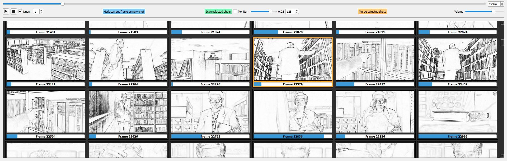

ShotBoard v0.6.0
For Windows 10+ and Linux (not sure about Mac, feel free to try).
ShotBoard: Visualize movies shot by shot
ShotBoard is a Python application designed for filmmakers, editors, storyboarders and enthusiasts alike, who want to explore the structural breakdown of a movie.
- Open a movie file (MP4) and detect its individual shots automatically.
- Display those shots as thumbnails in a grid-style storyboard for quick navigation.
- Hover over thumbnails to preview the corresponding shots instantly.
ShotBoard offers a seamless way to explore film storytelling.

With the "Lines" option checked:

Installation
Install FFmpeg
FFmpeg is required for video processing. Here's how to install it on Windows 10+:
- Download FFmpeg:
- Go to the FFmpeg official website.
- Under "Get packages & executable files", select a pre-built version for Windows.
- Download the ZIP file for your system (e.g. ffmpeg-release-essentials.zip).
- Extract the FFmpeg files:
- Extract the ZIP file contents to a folder of your choice (e.g. C:\ffmpeg).
- Add FFmpeg to the PATH environment variable:
- Open the Start menu, search for "Environment Variables", and select "Edit the system environment variables".
- In the "System Properties" window, click Environment Variables.
- Under System variables, find the PATH variable and click Edit.
- Click New, then enter the bin folder path where ffmpeg.exe and ffprobe.exe are located (e.g. C:\ffmpeg\bin).
- Test the installation:
- Open Command Prompt and type: ffmpeg --version.
- If FFmpeg is installed correctly, you’ll see version information displayed.
Install Python 3.10.6
- Download Python:
- Go to the official Python website.
- Download the installer for your system (e.g. Windows x86-64 executable installer for Windows 10+).
- Install Python:
- Run the installer and check the box for "Add Python to PATH".
- Complete the installation.
- Verify Python installation:
- Open Command Prompt and type: python --version.
- If installed correctly, it will display the version number.
Install the Necessary Dependencies
pip install PyQt5 opencv-python ffmpeg-python numpy scikit-image pyaudio matplotlib
If you encounter permission issues, try:
pip install --user PyQt5 opencv-python ffmpeg-python numpy scikit-image pyaudio matplotlib
User Guide: How to Use ShotBoard
Opening a Video File
- Click on File > Open Video.
- Select the desired video file.
Navigating Through the Video
Use the slider/spinbox or the arrow keys on your keyboard to navigate the video frame-by-frame or jump by larger intervals:
- Left/Right Arrow: Move backward or forward by 1 frame.
- Shift + Left/Right Arrow: Move backward or forward by 4 frames.
- Ctrl + Left/Right Arrow: Move backward or forward by 1 second.
- Alt + Left/Right Arrow: Move backward or forward by 4 seconds.
Scanning and Detecting Shots
- Select the only available shot in the board (if not already selected).
- Click Scan selected shots.
- ShotBoard will analyze the video and display the detected shots as thumbnails.
Tip: To display a detection graph in realtime, unable the Monitor checkbox BEFORE starting the detection process. You will be able to monitor when and why shots are detected (or not) by observing shot similiarities returned by the SSIM algorhythm. The lower the value, the less similar the current frame is to the previous one. Just remember to close the popup window when you're done.
Saving and Opening Shot Lists
Save detected shots for later:
- To save, click File > Save or File > Save As.
- To load a previously saved shot list, click File > Open Shot List.
Visualizing Shots
- To preview a shot, hover the mouse cursor over a shot thumbnail. The thumbnail will animate and play the shot as long as you hover it.
- To display a thumbnail as 'line drawings', check the Lines box and hover the thumbnail again. The greater the number, the darker the lines.
- Disable Lines to display thumbnails as video frames again.
Tip: check Lines BEFORE loading a saved shot list to display all thumbnails as 'lines'.
Setting the Video to the Beginning of a Specific Shot
- Click on a shot thumbnail to set the video to the start of that shot.
Correcting Shot Detection Errors
- Select the incriminated shot (Shift + Click to add more shots to the selection).
- Decrease the similarity threshold from 0.25 to around 0.10 and click on Scan selected shots again. New detected shots will automatically be added to the list.
If a shot still incorrectly contains multiple shots:
- Use the slider/spinbox or arrow keys to locate the frame where the first undetected shot begins.
- Click Mark current frame as new shot. A new shot will be added to the list.
- Repeat until all shots are correctly separated.
Merging Shots
- Select multiple shots using Shift + Click.
- Click Merge selected shots.
Exporting Shots to a MP4 file
- Select one or multiple shots.
- Click on File > Export or File > Export as.
File > Export: ShotBoard will save the excerpt using an automated convention (i.e. the original video filename plus a timecode to indicate the starting position).
File > Export As: Manually choose the save location and filename.
Tips
- Raise or lower the horizontal splitter to give more room to the video or the board.
Although ShotBoard will successfully detect most of the shots, it may struggle when:
- Transitions are blurry (e.g. fading to white or black, crossfading, strong motion blur)
- The lighting is stroboscopic (e.g. lightning, flashing lights)
- Images are choppy (e.g. faked slow motion in post)
To avoid overdetecting shots:
- Start by scanning at a similarity threshold around 0.25.
- Merge overdetected shots.
- Decrease the similarity threshold to around 0.10, then re-scan the underdetected shots as you see fit.
Conclusion
ShotBoard provides an intuitive way to analyze movies, study cinematic storytelling and explore editing techniques. Displaying shots as animated 'line drawings' can tremendously help studying storyboarding.
We hope you enjoy using ShotBoard and find it helpful in your creative or analytical endeavors. If you have any feedback, suggestions, or run into issues, please don’t hesitate to reach out or contribute